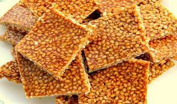

Grandma Assunta DiGiovanni's Sesame Seed Candy

A barebones version of giuggiulena
Ingredients:
- white sugar
- orange peel (in small bits)
- sesame seeds
- (optional) dried fruit or nuts
- butter or margarine
Steps:
- butter a cookie sheet
- Take a heavy frying pan, put on stove
- Pour in enough white sugar to cover the bottom and be about 1" deep
- Heat on Medium. Sugar will liquify and carmelize (brown and clear)
- When all dissolved, quickly mix in regular sesame seeds (enough to saturate solution thickly)
- (optional)Add bits of orange peel off a piece of fruit and/or nuts
- Pour onto buttered cookie sheet. spread it out evenly.
- Let cool, then break into pieces